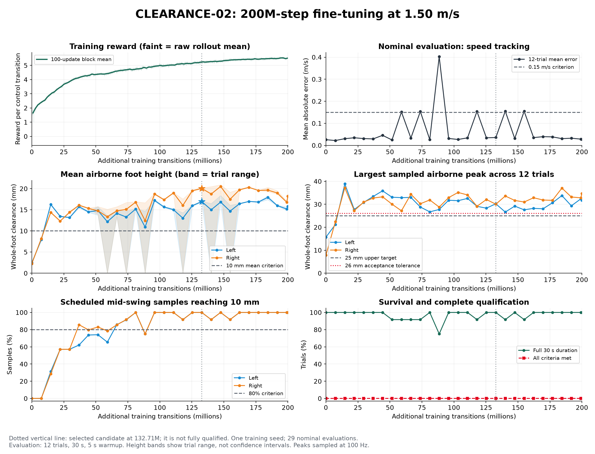

Training job 3232851 completed 200.01M additional transitions from the flat-feet baseline. The selected clearance candidate is from 132.71M, not the final checkpoint. This is a learned simulation policy, not an animation or a hardware test.
Promising, but not fully qualified: the selected candidate completes 12/12 nominal 30 s evaluations at 1.50 m/s. Mean airborne lift is 16.94 / 20.06 mm (left/right), and all scheduled mid-swing samples reach 10 mm. Sampled peaks reach 30.22 / 30.04 mm, above the 26 mm acceptance limit. No evaluated checkpoint met all criteria.
Fresh replay: 9/12 trials complete 25 seconds. Early falls: trial 1 at 0.70 s; trial 4 at 0.95 s; trial 5 at 0.95 s. This differs from the archived candidate evaluation's 12/12 full 30 s trials. The checkpoint, batch size, nominal settings and saved reset-command convention are retained, but the recorder is a separate compiled computation; the cause of the discrepancy has not been isolated. The stored evaluation curves are not a guarantee of reliable startup.
Trial 0 of the retained 12-trial replay: 25.00 s; outcome: 25 s completed; speed error after 5 s: 0.0360 m/s.
Nominal greedy MJX replay, seed 1000, batch of 12 at 1.50 m/s with the saved reset command. Trial 0 is selected before inspecting appearance; all trial metadata are retained. Two cameras show the same instant. Left foot blue, right foot orange. Video ends at the first termination; no reset trajectory is spliced in.

The dotted vertical line marks the saved candidate. Training reward and mid-swing coverage improve, but the peak-height objective remains unmet. Continued reward improvement does not imply that every gait criterion improves. This is one training seed, not proof of full convergence.